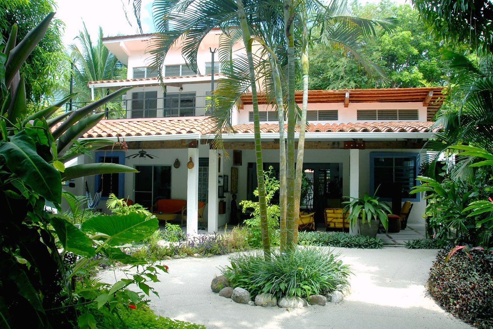

Beach house for sale · US$725,000 Playa Blanca La Antigua, Farallon
25 meters from the beach, a house among gardens.
Two floors, five en-suite bedrooms and a separate staff cottage, on a 1,850 m² lot. It sits one row back: it is not beachfront.
Message me on WhatsAppUS$725,000 Price
1,850 m² Lot
380 m² Built
5 En-suite bedrooms
The two beach photos show the surroundings of the property.
The house
Terraces, hammocks and garden.
It currently operates as guest accommodation. It works just as well for a family looking for a beach home, for someone who wants to live in Farallon, or for a buyer who would rather keep running it. Sold furnished and equipped, excluding personal belongings.
The two beach photos show the surroundings, not the view from the house.
The facts
The details of the house.
Lot
House
Other
Information provided by the owner.
Location
Playa Blanca La Antigua, Farallon.
District of Anton, province of Cocle. The house sits one row back, 25 meters from the beach.
Questions
What people ask me most.
Is it beachfront?
No. It sits one row back, 25 meters from the beach. The two beach photos show the surroundings, not the view from the house.
How big is it?
380 m² built on two floors, on a 1,850 m² lot.
How many bedrooms and bathrooms?
Five bedrooms, each with its own private bathroom; one has a kitchenette. The staff cottage has its own kitchen and bathroom.
Is it sold furnished?
Yes. It is sold furnished and equipped, excluding personal belongings.
Is it run as guest accommodation?
Yes, it currently operates as guest accommodation. The trade name is negotiated separately.
When is handover?
No earlier than six months after the sale.
How do I visit?
Tell me which day works for you, whether you are buying in cash or with financing, and your timeline. I coordinate the visit with the owner.
Let’s talk
Would you like to see it?
Message me and we’ll set a day. If you want a second, calmer look afterwards, we’ll walk it together.
Dario Jhangimal · Real Estate Broker · License PN-1240 · SpotOne Realty